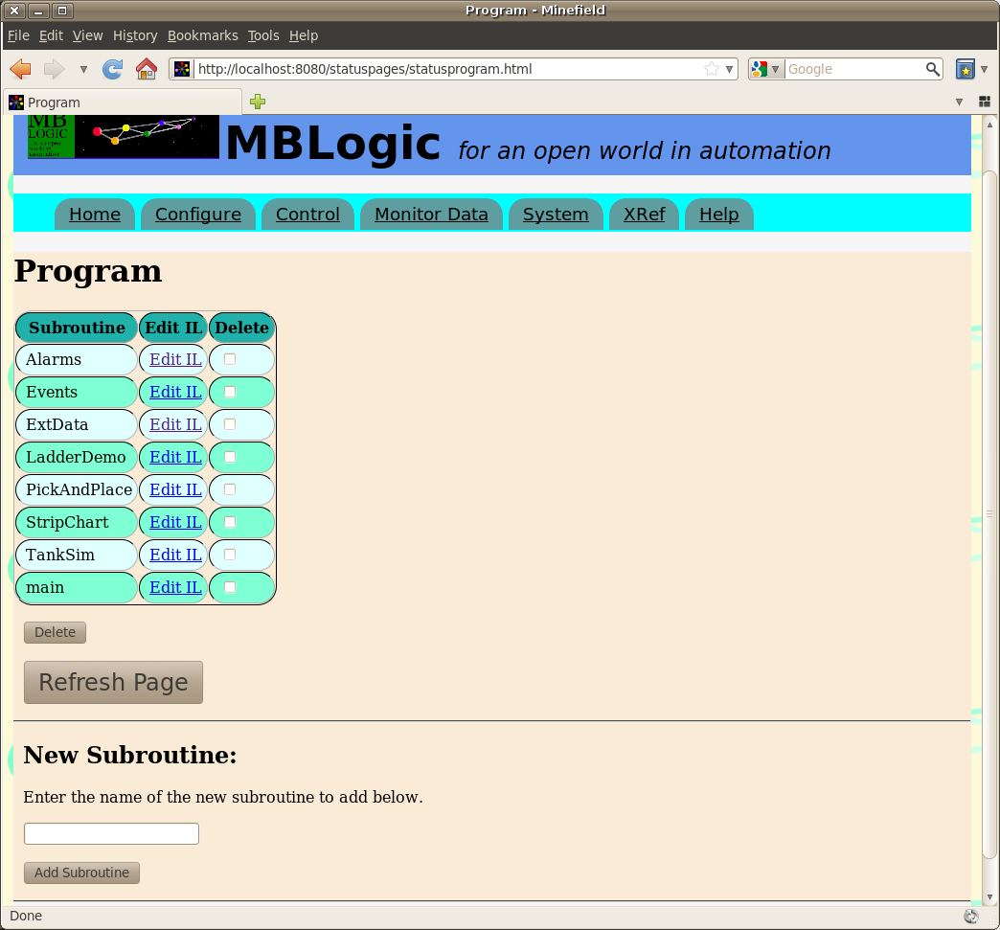
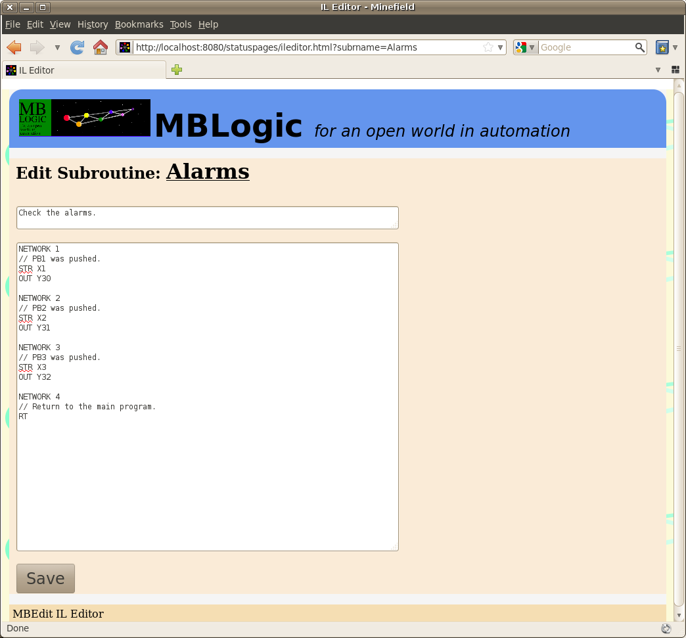

MBLogic
for an open world in automation
MBLogic
for an open world in automation
Help - Soft Logic Program
Overview
The "Soft Logic Program" page provides a summary of the subroutines in the current soft logic program, as well as a means to add, edit, or delete the soft logic program. The first section includes a table with the following items:
- The name of the subroutine
- A link the a new page which allows the IL to be edited.
- A check box which allows a subroutine to be selected for deletion.

Editing a Subroutine in IL
To edit a subroutine in IL format, click on one of the links in the "Edit IL" column. To save the subroutine, select the "save" button below the edit window. If the changes were Ok, the subroutine will be inserted into the running program. If they were not Ok, the running program will not be affected and the errors will be listed above the edit window.
Subroutine comments go in the small edit box immediately below the subroutine name.

Import Points About Editing
Important! It is possible for multiple persons to edit the same program simultaneously provided they are not simultaneously editing the same subroutine. However, the system will not prevent two or more persons from attempting to edit the same subroutine at the same time. If this happens, the last person to save will overwrite previous edits to that subroutine by other users.
Important! The IL editor will automatically add the subroutine declaration when you save the subroutine. Do not add a subroutine declaration manually.
If you were editing a subroutine and have changed its name, the editing system will not be able to find the old name when it attempts to continue editing it. It will therefore display an error. In this case, close the edit page, refresh the list (to update it with the new subroutine name), and select the subroutine again under the new name.
Important! The subroutine edit page only displays errors which are within that subroutine. It does not check calls to other subroutines nor does it check if the rest of the program calls that subroutine (this may be affected if you rename the subroutine). To check for these conditions, refresh the "Control" page and check for any warnings at the bottom of the page.
Adding and Deleting a Subroutine
To add a subroutine, enter the name of the subroutine in the input box at the bottom of the page and press the "Add Subroutine" button. A new subroutine will be created and added to the list where you can choose to view or edit it.
To delete one or more a subroutines, select the subroutine (tic the corresponding box in delete column) and press the "Delete" button. The subroutine(s) will be deleted and the list updated.
Important! Deleting a subroutine does not delete any calls to the subroutine which may be located elsewhere. Calling a subroutine which does not exist (has been deleted) will cause an error. It is generably advisable to delete all calls to the subroutine first before deleting the subroutine itself.